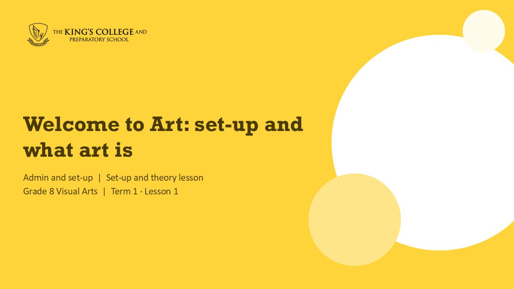

Term 1 · Lesson 1 · Theory and practical lesson
Welcome to art
Start here
Today I will
- Today I will learn how our art room works
- Today I will talk about what art is and why people make it
- Today I will set up my visual journal with five kinds of line
Look at these six pictures. Which of them are art? Which one would you hang in your room, and why?
Words to know
- Visual journal
- Your art book (sourcebook) for exercises, notes, ideas and new words. It shows how you think and grow.
- Medium
- The material an artist works with, such as pencil, paint, charcoal or clay. The plural is media.
- Mark-making
- All the different marks you can make with a tool: dots, dashes, scribbles, lines and smudges.
- Line
- A mark that joins two points. It can be thick or thin, straight or curved, calm or wild.
Slides

Notes
What art is and why we make it; the art room routine (setting up, cleaning, care of materials); setting up the visual journal; how to use the Art Vocabulary booklet.
How our art room works
- Come in and set up: Bag away, journal out, collect only the materials on the board.
- Look and listen first: Watch the demonstration before you touch the materials.
- Care for materials: Pencils sharpened over the bin, lids back on, nothing left on the floor.
- Pack up properly: Five minutes before the end: tools back, table wiped, work stored flat.
Your visual journal and vocabulary booklet
- It is a working book: Mistakes and experiments belong here. Nobody expects perfect pages.
- Date and title every page: So you and your teacher can follow your progress.
- New words: When you meet a new art word, look it up in the Art Vocabulary booklet and use it in a sentence.
- Bring it every lesson: Most exercises are done and assessed in the journal.
Everyone can learn to draw: art is a skill you build one line at a time.
In this passage God fills Bezalel with skill to design and make beautiful things. What does that tell us about where our creativity comes from?
Practical
You need: Visual journal, HB and 2B pencils
My name in five kinds of line
- Write your name lightly and large across the journal cover in HB.
- Fill or outline each letter with a different kind of line.
- Use at least five kinds: straight, curved, zigzag, dotted and wavy (or spiral, thick-and-thin).
- Press harder with the 2B to make some lines darker and bolder.
- Add a small border pattern if you finish early.
Test yourself
- What is a visual journal for?
- What does the word 'medium' mean in art?
- Name three kinds of line you used today.
Show answers
1. Exercises, notes, ideas and new words: a record of your thinking and progress. 2. The material the artwork is made with, such as pencil or paint. 3. Any three: straight, curved, zigzag, dotted, wavy, spiral, thick-and-thin.
Finished early?
Show that the same tool can make calm, happy and angry lines.
- Draw a long strip of four boxes in your visual journal.
- Write one feeling under each box: calm, happy, nervous, angry.
- Fill each box with lines that show that feeling, using only your HB and 2B.
- Circle the box where changing the pressure made the biggest difference.